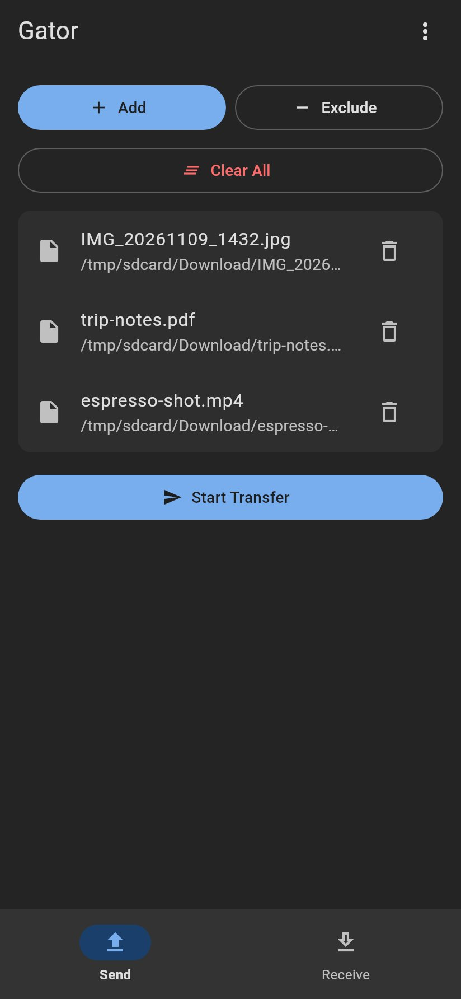
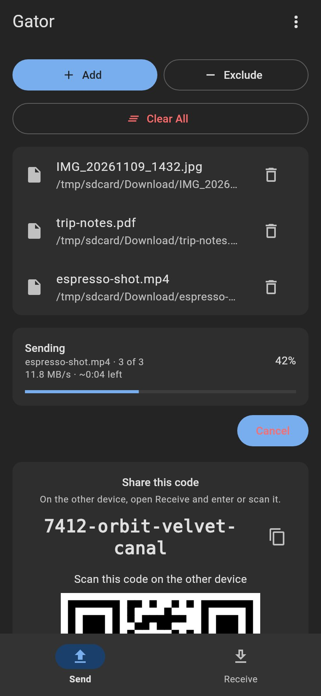
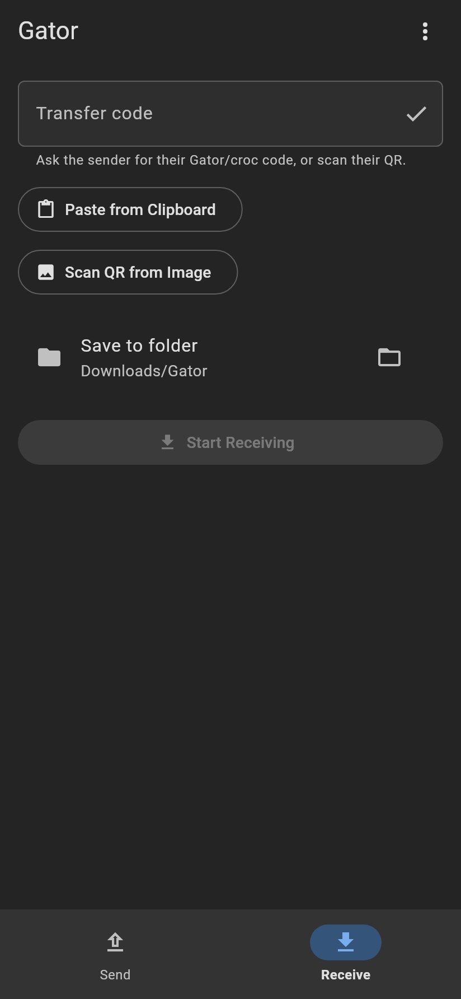
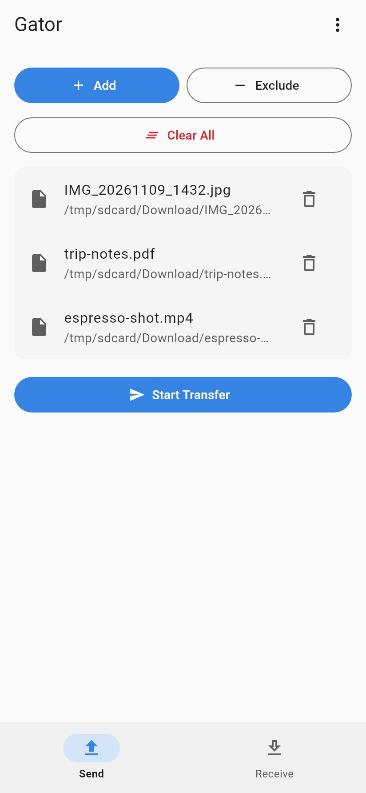

Flutter · Android and Linux
A Material 3 front end for croc: send and receive files, folders, or text with end-to-end encryption, plus a share code and QR.
Personal, experimental software. Nothing here is a finished product, and nothing was necessarily written or reviewed by a human unless it says so. Use it at your own risk.




Current build: 1.5.16 (version code 17), arm64-v8a. Flutter port of the GTK app Gator, using croc.
On Android, Obtainium can install updates from a Standard JSON file. Add this URL:
https://raw.githubusercontent.com/isyourbrainfoss/gator-flutter/gh-pages/version.jsonAdd in Obtainium (opens the app if it is already installed).
GitHub Release asset URLs often fail on phones with “Connection closed while receiving data”. Prefer the JSON mirror above.
SHA-256: 04768e6561b69b8e1a8959e0ed3d6bce7d1f03d870b66520f343388609007dc9
If an older build was signed with a temporary CI key (before v1.5.3), uninstall once and then install from Obtainium.
App id org.gator.gator (distinct from the GTK app org.gator.Gator). The ostree remote is unsigned, so --no-gpg-verify is required. A .flatpak bundle from a GitHub Release is a one-shot alternative.
flatpak remote-add --if-not-exists --user --no-gpg-verify gator-flutter \
https://isyourbrainfoss.github.io/gator-flutter/gator.flatpakrepo
flatpak install --user gator-flutter org.gator.gator